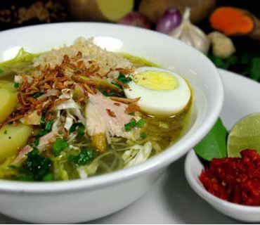

Bahan:
- 1 ekor ayam dipotong sesuai selera
- 3 lembar daun jeruk
- 1 tangkai serai/sereh(di geprek)
- 1 buah tomat(dipotong biasa
- secukupnya seledri dan bawang daun
- secukupnya bawang goreng
- 1 buah jeruk nipis untuk melumuri ayam
- 1 buah jeruk nipis untuk melumuri ayam
- 1 buah jeruk nipis untuk melumuri ayam
- 1 buah jeruk nipis untuk melumuri ayam
- 1 buah jeruk nipis untuk melumuri ayam
- 1 buah jeruk nipis untuk melumuri ayam
Bumbu Halus:
- secukupnya merica butiran
- secukupnya jahe
- secukupnya kunyit
- 3 pcs bawang putih
- 3 pcs kemiri
Pelengkap:
- 5 bungkus soun kaca (direbus)
- 6 butir telur (direbus)
- secukupnya kol (direbus)
- tahu potong dadu(digoreng)
Cara Membuat:
- Rebus ayam dengan air 13 gelas, tunggu sampai ayam mateng, lalu ayam tiriskan
- Tumis bumbu yg dihaluskan tambah daun jeruk dan serai/sereh, lalu masukan ayam yg sudah ditiriskan masak sebentar dan matikan api
- Panaskan lagi air kaldu ayam yg tadi dan masukan bumbu tumis dan ayam barusan ke dalam panci masak hingga matang tambahkan garam dan gula pasir secukupnya, angkat ayam untuk digoreng lalu disuir
- Setelah mendidih dan sudah matang tambahkan irisan bawang daun, seledri, tomat, dan goreng bawang masak sebentar lalu matikan api
- Siapkan mangkok diberi soun, tahu, kol, suiran ayam, dan telor tuangkan kuah soto beri kecap manis dan sambal(cabe rawit diulek biasa) siap disajikan
<